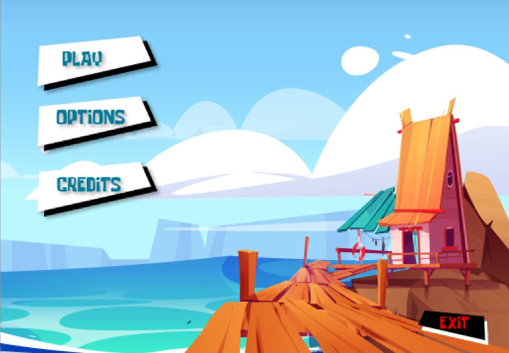
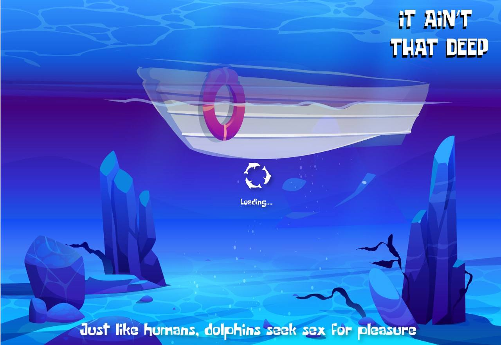
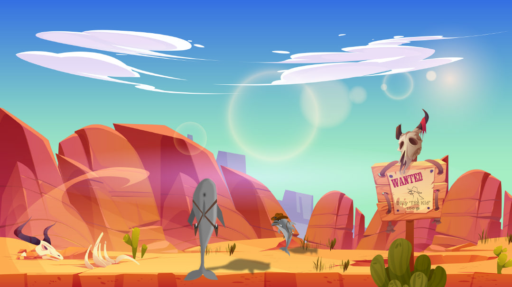
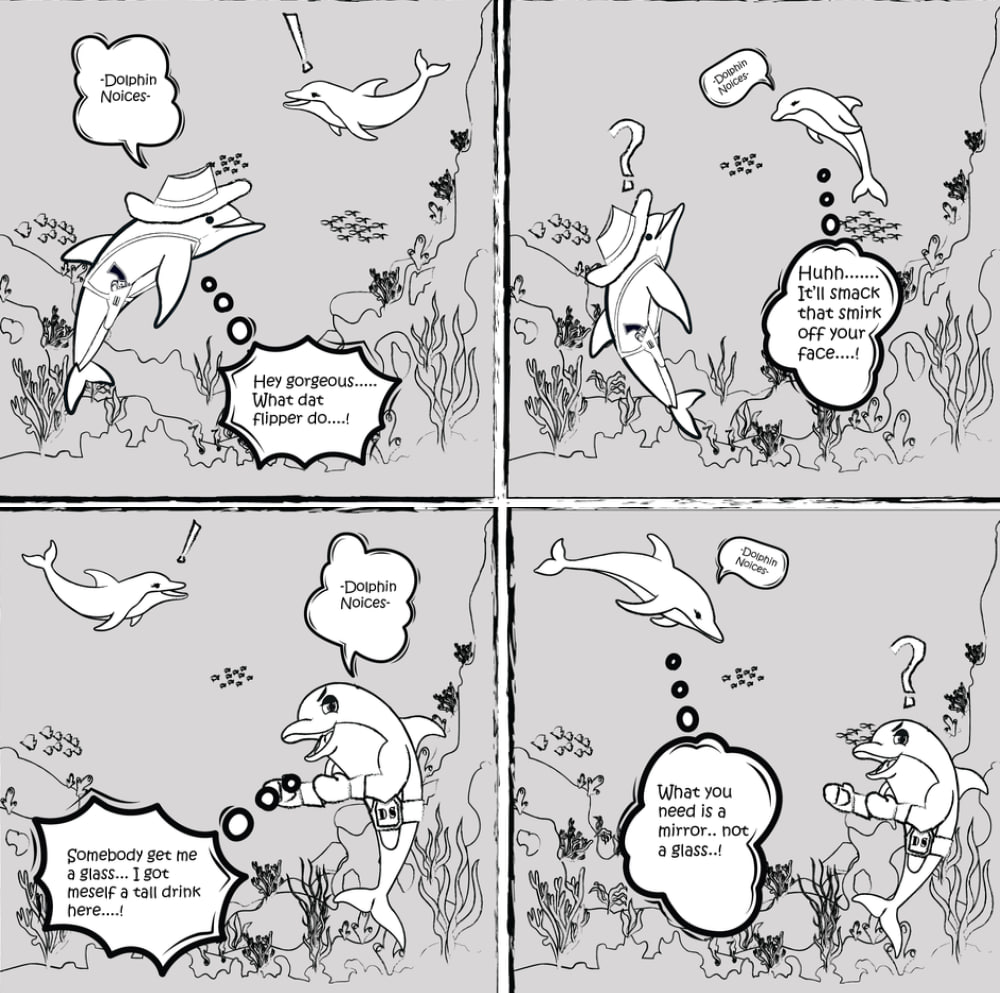
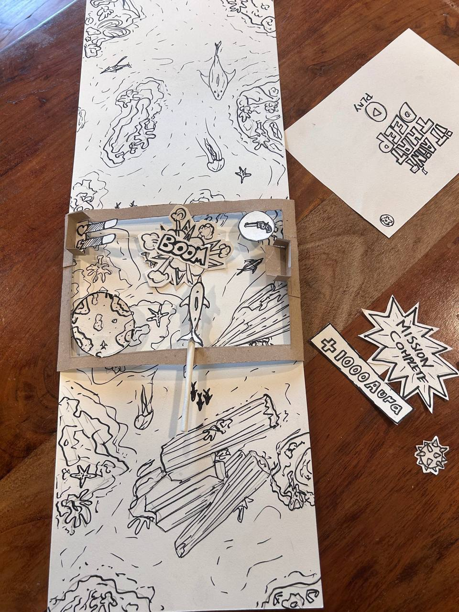
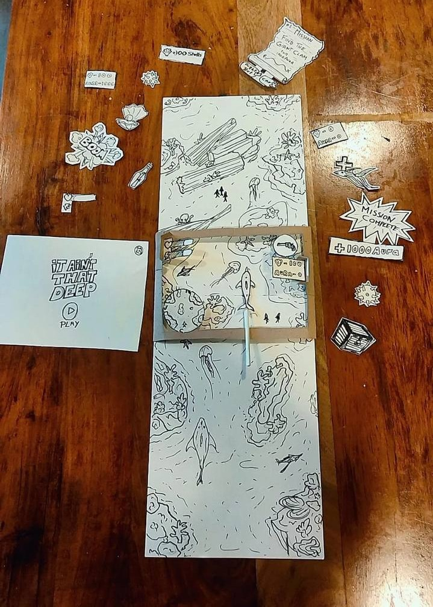

It Ain’t That Deep (Work In Progress)

Gameplay Prototype

Main menu of the game

Loading screen with dynamic tips

Still from an in-game cutscene

Storyboard from early narrative planning

Initial sketch of interaction layout

Refined version of paper prototype
About the Project
It Ain’t That Deep is an absurdist 2.5D sandbox game where you play as a dolphin causing underwater chaos. Inspired by titles like the original Doom, Goat Simulator, Shark Tale, and Untitled Goose Game, it's built to encourage freedom, emergent interactions, and unpredictable outcomes.
This is a research-driven thesis project developed as part of my MSc in Creative Digital Media & UX alongside Jake Avra. It blends design systems, dialogue mechanics, and UX theory to build a world that invites experimentation through humour and player expression. Everything here is still being prototyped, iterated, and stress-tested as we build towards a full vertical slice.
Technical Highlights
- 2.5D Player & First Person Player Controllers
- Pixel Crushers Dialogue System powering branching interactions
- Contextual triggers for dynamic, chaos-driven reactions
- Figma-to-Unity UI pipeline with layered feedback loops
Development Focus
- Combining academic UX principles with playable systems
- Designing player-driven chaos through layered interactions
- Balancing absurdity with intentional affordances
What We’ve Learned So Far
- How to scope and structure a game production pipeline
- Challenges of building and syncing multiple dynamic systems (dialogue, physics, quests)
- Player feedback is key to balancing absurd mechanics with functional outcomes
- Importance of modularity when building chaotic sandbox logic
- Iteration is king, every week, something breaks, and something else makes sense